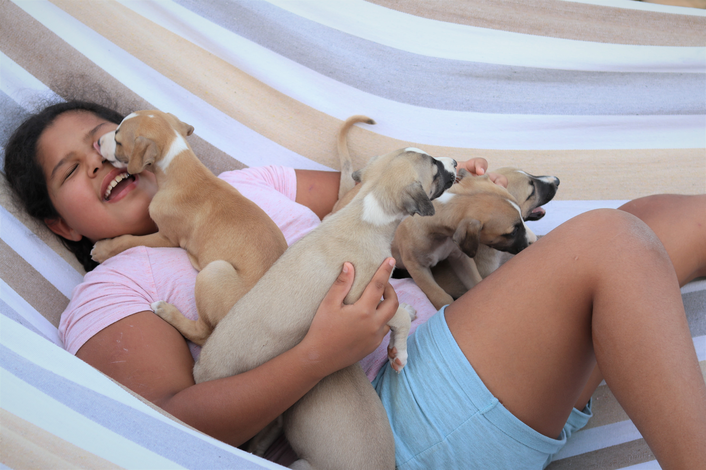
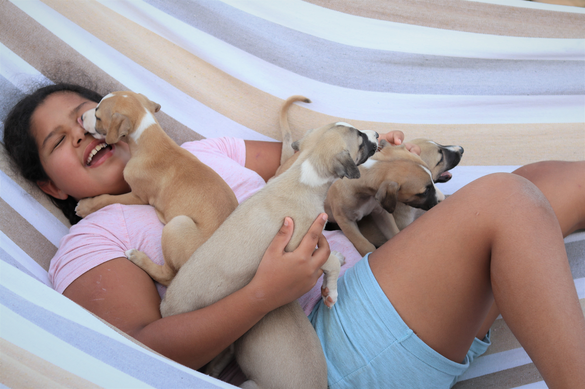
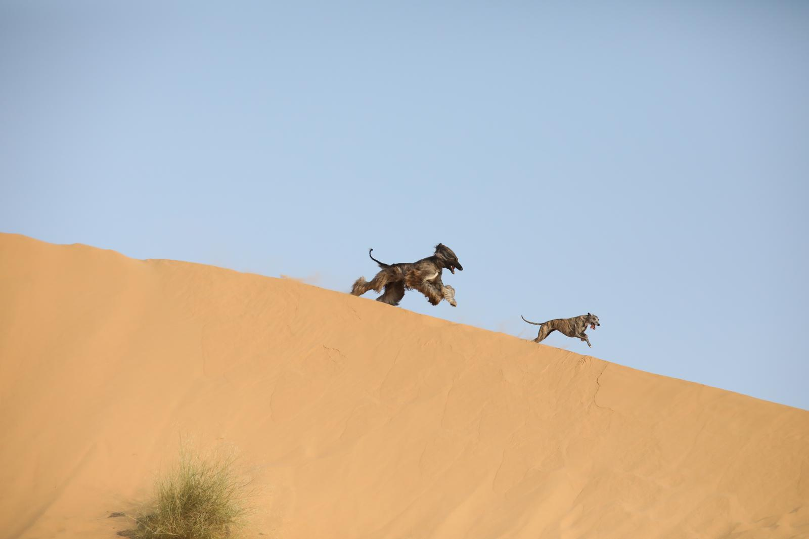
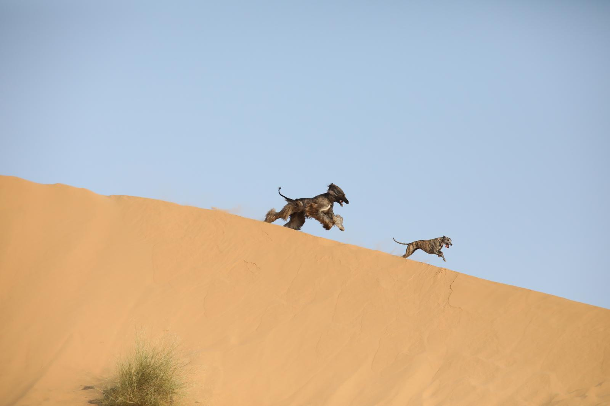

 



האהבה הראשונה הייתה האפגני אבל הוויפט שבה את ליבנו עם העדינות שלו והאהבה האין-סופית שהוא מחזיר. בית הגידול 'סוויפט ראנדום' נוסד ב1996 עם המלטת הוויפט הראשונה שלנו, מהורים מגידול מקומי. עם השנים בית הגידול התרחב מאוד עם כלבי יבוא נהדרים שהוסיפו למאגר הגנטי המקומי ושאת חותמם רואים עדיין בכלבים של היום. אחרי הפסקה קצרה באמצע שנות ה2000, ולאחר הולדת ילדיי, בית הגידול חזר לפעילות עם כלבי יבוא מפולין, פינלנד, איטליה ואירלנד...
אתם רוצים לצרף וויפט למשפחה? יש לכם שאלות? רוצים לדעת יותר?
טל: 050-8783505
מייל: swift.random@gmail.com
Our first love was the Afghan Hound, but the Whippet stole our hearts with its gentleness and endless affection. The 'Swift Random' kennel was founded in 1996 with our first Whippet litter from locally bred parents. Over the years, the kennel has expanded significantly with excellent imported dogs...
Interested in adding a Whippet to your family? Have questions? Want to learn more?
Phone: 050-8783505
Email: swift.random@gmail.com